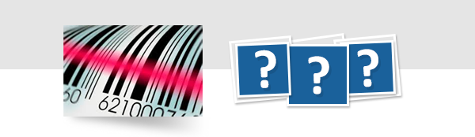

Março /2021

|
Oferecemos diversas formulações de ribbons na linha Premium (Cera, Misto e Resina), para aplicações muito específícas e/ou especiais como: impressão em velocidade alta, necessidade de resistir ao calor, á água, á produtos químicos, entre muitas outras. Lembramos que a utilização de base adequada (etiqueta auto-adesiva ou tag) aonde será impressa deve estar de acordo com a aplicação e formulação de tinta (ribbon): É necessário que haja compatibilidade entre a base e o ribbon, para que a informação impressa seja legivel e, possa ser lida sempre que necessário. Então assim como a tinta (ribbons), existem também muitos tipos de etiqueta. Então, como escolher a etiqueta certa? Apesar de não fabricarmos etiquetas auto-adesivas podemos orientar na escolha da sua etiqueta com algumas perguntas básicas. Se você deseja saber, solicite seu Guia de Como Escolher a Etiqueta Correta no markitin@iimak.com.br |
|  | ||
| ||
| www.iimak.com.br | ||